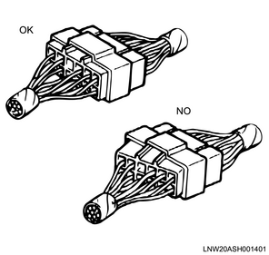

Introduction safety information (All models)
1. Repair work safety information
Warning
- Repair manuals are created for qualified service technicians that have acquired the specialized training. If vehicle maintenance is performed by a person without the necessary qualifications or that has not received the appropriate training, damage may be caused to the vehicle, or harm may come to the service technician and people in the vicinity.
- If vehicle maintenance is performed without using the appropriate tools and devices, damage may be caused to the vehicle, or harm may come to the service technician and people in the vicinity.
- If vehicle maintenance is performed using a procedure other than indicated in the repair manual, damage may be caused to the vehicle, or harm may come to the service technician and people in the vicinity.
Caution
- When replacing parts, make sure to use only genuine parts because the appropriate maintenance and repair procedures are essential to maintain the safety of the service technician and the safety and reliability of the vehicle.
- Make sure to read the repair manual thoroughly before work because it contains procedures and information that must be followed when performing vehicle maintenance and repairs.
- When performing maintenance and repair works, use the special tools specially designed for each purpose in the correct manner.
- Never perform procedures or use tools other than those recommended in the repair manual, in order to ensure the safety of the service technician, and the safety and reliability of the vehicle.
- To ensure accidents do not occur during the maintenance and repair procedures, prevent damage to the vehicle due to inappropriate procedures, and ensure the safety and reliability of the vehicle, the repair manuals indicate information that must be followed particularly closely using the terms "Warning", "Caution", and " Note". Therefore, make sure to read the repair manuals thoroughly before work.
- Clean and safe costume
- Installation of chock blocks
- Support by a stand after jacking up.
Caution
- Prepare the tools, instruments, and special tools in advance.
- Prepare the parts that require replacement and parts that cannot be re-used in advance.
- The service technician must wear a clean service technician uniform, hat, and safety footwear.
- Make sure to use a seat cover, etc.
- Disconnect the negative terminal of the battery cable in advance.
- Always focus on safety.
- Make sure to use chock block when the vehicle is jacked up.
- After jacking up, make sure to support the specified position using a stand.
- When lifting up the vehicle using a lift, make sure to set the safety device.
- When performing a work with two or more people, make sure to ensure each other's safety before making an action.
- Do not leave the engine running for an extended period of time or perform painting in a poorly ventilated working environment.
- Make sure to use the special tools when the procedure requires them for the work.
- Do not use tools such as an open-end wrench that has lost its edges, a hammer with frayed edges, or a chipped chisel.
- When performing work using a device such as a grinder, crane, or welder, make sure that a qualified technician performs the procedure while paying sufficient attention to the handling precautions.
- After performing maintenance on the fuel system, make sure to confirm that there is no fuel leakage.
- When handling volatile materials, take care that they do not catch fire.
- Make sure to wipe away any oil that sticks to rubber parts, as it can cause deterioration.
- Arrange removed parts in the correct order and ensure they do not get mixed up with parts that cannot be re-used.
- Perform sufficient cleaning and washing when performing assembly / installation.
- Perform sufficient grease removal for areas to apply liquid gasket, etc.
- After completing the procedure, perform a final check to confirm that the problem has been solved.
- Confirm that there is no fuel, oil, or engine coolant leakage.
- Disconnect the battery cable before conducting welding.
- Disconnect all control cables before conducting welding.
- Turn all the switches off before conducting welding.
- Make sure the ground connection for the welder is as close to the welding area as possible.
2. Vehicles with supplemental restraint system safety information
Warning
- Do not use any of SRS parts from other vehicles or models.
- Make sure to confirm the part numbers and use the SRS parts intended for the target vehicle.
Caution
- When performing inspection work, make sure to turn the ignition switch to the "LOCK" position.
- Take care not to give a strong impact to the SRS airbag, front airbag sensor and surrounding areas.
- When performing maintenance for the SRS parts and the SRS harness and other works indicated below, make sure to follow the procedure in the repair manual because the SRS functionality needs to be temporarily deactivated.
| Works which require deactivation of the SRS airbag functionality |
| Repairs around the steering wheel |
| Repairs around the instrument panel |
| Repairs around the glove box |
| Repairs around the fuse box |
| Repairs around the dash board |
| Repairs around the center console |
| Repairs around the seat belt |
| Installing products such as a car stereo |
| Painting the cab plates |
3. Replacement parts and parts number safety information
Caution
- Whenever disassembly is performed, make sure to replace the packing, oil seals, O-rings, crimping lock nuts, bending lock plates, cotter pins, etc. with new ones.
- Make sure to confirm the supply system and part numbers in the parts catalog because the part numbers indicated in this manual may differ from the supply system or are subject to change.
4. Connector handling safety information
Note
- Disconnecting the connectors
Caution
- Many connectors have a lock to ensure secure connections.
- The two types of locks generally used are those that open by lifting the release area of the lock, and those that open by pressing the release area.
- Before disconnecting the connector, determine in advance which type the connector belongs.
- Lock
- Release area
Caution
- When disconnecting the connector, first securely grasp the male side and female side of the connector. Release the lock, and carefully disconnect the connector.
- When removing the waterproof connector, remove dust or moisture that adheres to the connector by blowing air, etc. If dust or moisture enters the connector, remove it before connecting the connector. As for moisture, dry well to prevent rust.
- Do not pull the harness when disconnecting the connector, as this may cause the wiring to come out or break.
Note
- Connecting the connector
Caution
- Securely grasp the female side and male side of the connector, and align them correctly.
- Firmly push them together until both sides click into place.

5. Electrical parts handling safety information
Warning
- If the fuse melts down, make sure to replace it with a non-defective fuse of the same capacity, after identifying the cause of the melt down.
- If a fuse with high capacity is used, it does not perform its function when an excess current flows.
- This may cause parts, wiring, etc. to burn, and can result in a vehicle fire.

Caution
- As for electric parts including those that are installed outside the cab and are waterproofed, try to avoid exposing them directly to the high pressure water when washing the vehicle (cover them with plastic sheets, etc.) as much as possible.
- Handle electronic parts with sufficient care, and do not damage the parts by dropping or throwing them.

Caution
- When installing electronic parts, take care to ensure the harness does not get stuck and do not forcibly push the harness in.
Caution
- Make sure that all connections are clean and secure.
- When the harness is contacting sharp edges or surfaces of other parts, protect the harness using a grommet or tube to prevent damage due to the contact.
Caution
- When wiring the harness by diverting it around other parts, give the harness a sufficient amount of free length, and use a protective tube and clip to ensure it does not contact surrounding parts.
- Clip
- Protective tube
Caution
- For wiring between the engine and chassis, give the wiring sufficient free length to prevent wear and damage caused by vibrations.
Caution
- When securing additional wires along the existing harnesses, install the band clips on the protective materials (corrugated tube, vinyl chloride tube, rigid tube, protector, etc.) installed on the existing harnesses.
- Existing harness (with protective material)
- Additional harness
- Band clip for securing harness
- Prohibited area for securing band clip
6. Commercial electronic products safety information
Caution
- If commercial electronic products such as lights, audio systems, or wireless devices are installed to the vehicle, turn the power of such devices off in advance.
- Otherwise, remove the commercial electronic products before inspection or maintenance.
7. Failure by electrostatic discharge safety information
Caution
- As a high voltage applied to the related parts due to electrostatic discharge may cause a failure, touch a known good ground before inspecting or replacing the related parts.
- Do not directly touch the connector pins of related parts or rub them with parts or covers, etc.
- Connect the replacement parts to a known good ground while they are still in their packaging, and then take them out without touching the packaging with the connector pins.